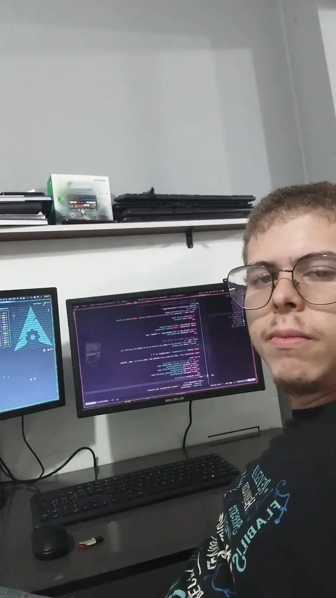
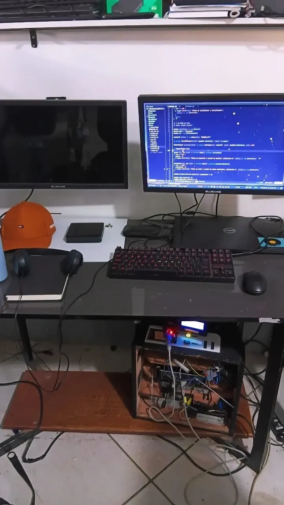
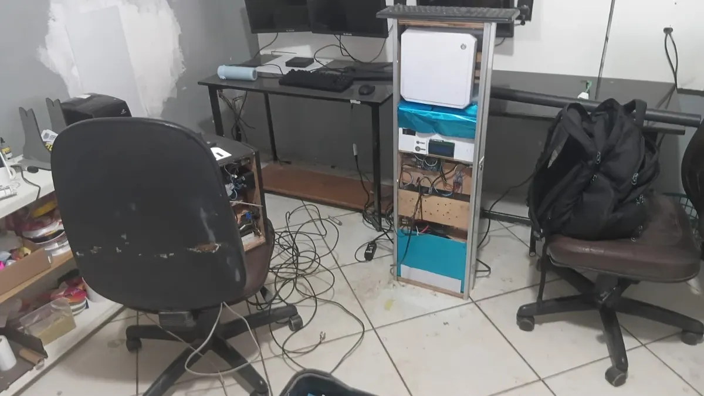

I'm Rodrigo, from São Mateus, in Espírito Santo, Brazil. I started programming at 10, on a Windows XP box: I installed XAMPP and learned PHP so I could build little game websites with leaderboards. Later I moved to Linux. I did a technical high school course in IT support (2021–2024), and in 2024 I started at MyTempo, a race-timing company.
At MyTempo I spent two years on the boxes that sit at the start and finish line of a race and read the RFID chip on every runner's bib. I wrote most of that code, from the Go services down to the Arduino screen, and once rewrote the whole thing over a weekend because a simpler design was better. I also built the Go backend for PvAuto, a marketplace.
These days I work with data at Centro Universitário Vale do Cricaré, writing a lot of SQL, and I've just started a degree in Computer Engineering there. I'm a Linux Foundation LiFT scholar and I'm studying for the Kubernetes administrator exam (CKA).
I like old-school programming, Forth and whiteboards.


